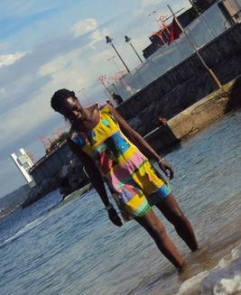

Lets break the ice first… a bit about me. I’m a seasoned communications creative — passionate about developing branding and communication strategies and translating them into slick, successful campaigns. I’ve been around the block and worn many hats. I have been a print journalist, a radio news anchor, breakfast show presenter, pr girl, and a corporate communications pro with a focus on conservation.
A Jack or perhaps Jane of too many trades, you must be thinking right about now? But don’t be fooled; this is all a plot for world domination, one brand at a time.
I've worked with some pretty cool organisations, including Nation Media Group, Royal Media Services, Ogilvy Public Relations, Laikipia Wildlife Forum, African Wildlife Foundation, done awesome destination marketing for Il Ngwesi Lodge and Laikipia as a whole.
Key areas of experience include Creative Direction, News Anchoring, destination marketing, Montessori, print media, Branding and Communications and parenting.
I get a kick out of living an outdoor life, travelling, good food and wine (plenty of wine), books, kids, kick boxing, tango, making money, writing for children and real estate.
This is a snapshot of my love of travel especially to places far from the maddening crowds and way off the beaten path. It was built using html and CSS.
Fairly self explanatory, the first time you get to say Hello World as a coder. My very first website created with html and CSS.